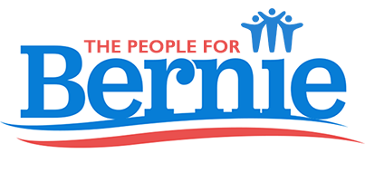

Make Yourself Heard
Connect with political action groups and take action
Connect with action groups

- Pick groups that you support
- Learn as new groups are added
- Research new groups
- Suggest additional groups
Stay informed & involved

- Research suggested actions
- Get alerts when to act
- Telephone numbers at hand
- Talking points make it easy
Political Action Groups
Politi-Call makes it easier for your supporters to stay engaged and act
See Our Launch Political Action Groups Below

Keep checking back as we add more groups
Download The App
You can download the Politi-Call app from the App Store.
About Us
Waking up on the Monday after the Woman's March and excited to make ourselves heard, we could not remember the telephone number of our representatives that Michael Moore had chanted during his speech. We realized that there were probably many people facing the same issue. As iOS developers, we realized that we could help. That was the birth of Politi-Call.
About The App
Politi-Call was designed to help you get involved in politics.
Our goal is to make it easy to participate in a meaningful way abour topics you care about.
Phone calls are a very powerful way to express yourself. Your representatives react to phone calls in ways that they dont to emails and tweets. We work to simplify making those calls.
Contact Us
Feel free to email us to provide some feedback, give us suggestions, or to just say hello!